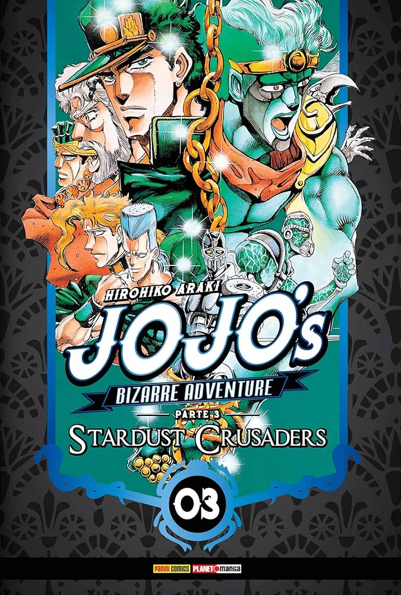

Jojo's Bizarre Adventure
O que se trata?
Uma franquia que conta a história dos integrantes da fámila Joestar!
todos os integrantes possuem manifestações paranormais, também conhecidos como STANDS.

Quantas partes possuem?
originalmente o anime possue nove partes, mas por enquanto apenas sete foram animadas.
A minha parte favorita é a parte três

last train home
tela de encerramento parte 3